As a three-month academic project, proxi is a mobile recipe
app designed for selective
eaters to find recipes catering to their dietary needs while promoting food exploration.
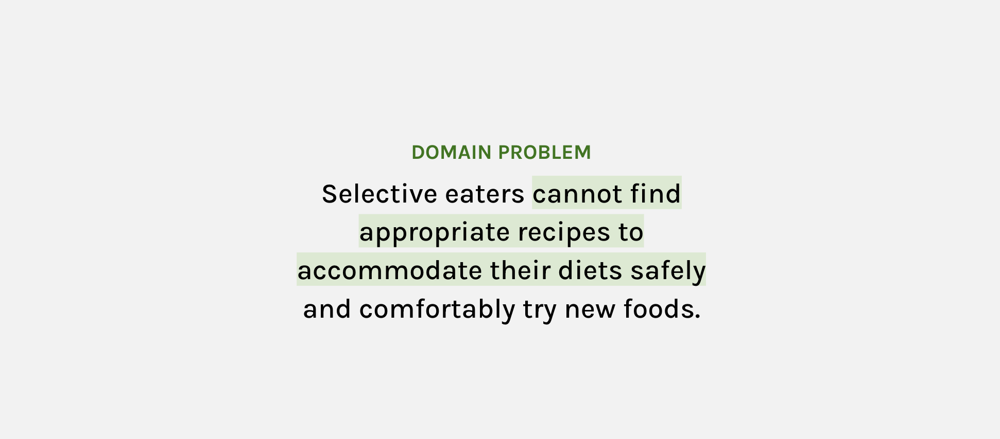
domain problem
THE PROCESS
content & needs
In the early stages of the process, we began by investigating the issues our
targeted audience encountered while searching for new recipes. I found that selective eaters potentially
had lower qualities of life due to food-related stress, as they were unable to search for and adapt to
their dietary restrictions.
Our other findings also found that, overall, these people had a hard time
modifying recipes as it requires additional knowledge on the different substitutions and options
available to them that would impact their overall health.
This is important because not every meal plan is suitable for each person, but by substituting
individual ingredients, it allows them to eat familiar foods while maintaining their dietary goals.
findings
Our team analyzed the common challenges that arose from the goals of our
target audience, where we began proposing viable design opportunities that would enhance the users’
experience.
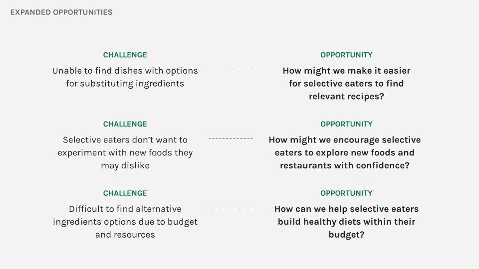
possible opportunities
User Persona
We created two user personas that were realistic and reliable representations
of our potential target audience. These representations were based on qualitive and quantative user
research. By understanding who we are designing for, it allows us to recognize the expectations,
concerns, and motications of the users.
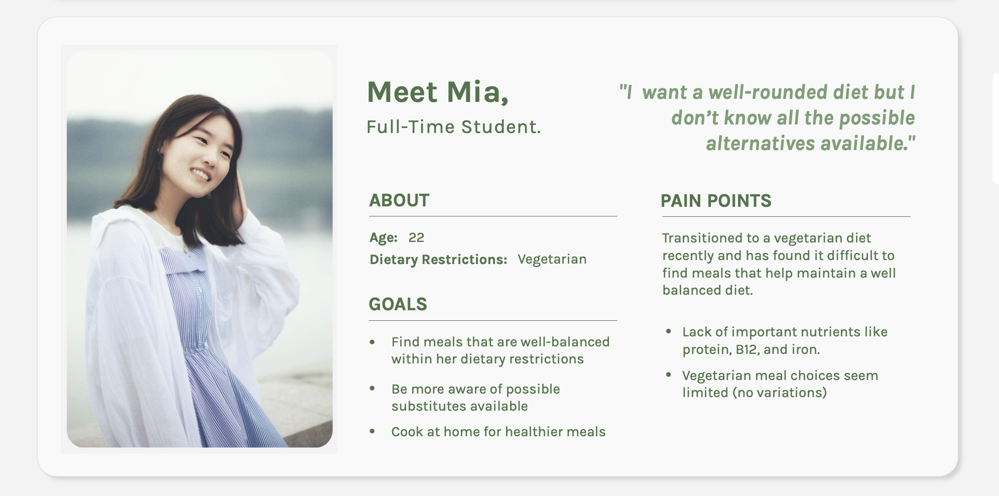
User Persona: Mia
Mia is our first user persona, a full-time student who recently
transitioned to a vegetarian diet but currently struggling in finding meals that help her maintain
her dietary needs.
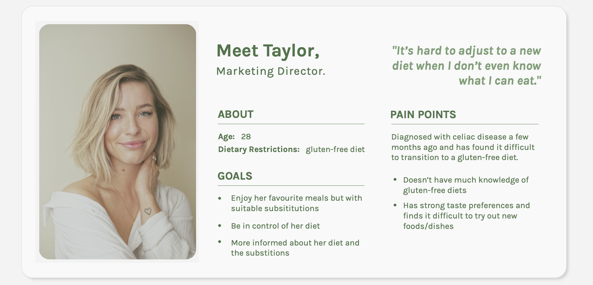
User Persona: Taylor
Taylor is our user persona, a full time worker who was recently diagnosed
with celiac disease. Due to this, she had to transition to a gluten-free diet and it's been
difficult due to the lack of knowledge she currently has about substitutable ingredients.
the framework
Through preliminary research of academic sources and user interviews, we began
creating our sitemap, highlighting the features we would include in our design.
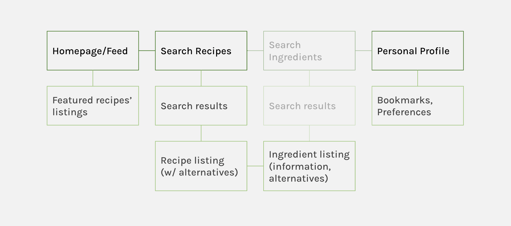
high level site map
objectives
Then we focused on what our main objectives would be for this interface.
1. How can we organize large amounts of information into consumable portions? For
instance, would we sort by popular recipes? or have distinctive categories?
2. How in depth will each page be? Will be have full-pages and/or pop-ups based on
infornmation immediately needed?
3. And finally, how can we balance the above two criteria for the user to explore
new interests, while also finding specfiic and accurate information that is quickly accessible and
highly specific?
solution
We created medium-fidelity mockups and began comparing the different designs
we had. By comparing and constrasting with reasonable explanation and reasoning, we were able to choose
a design to go forward with.
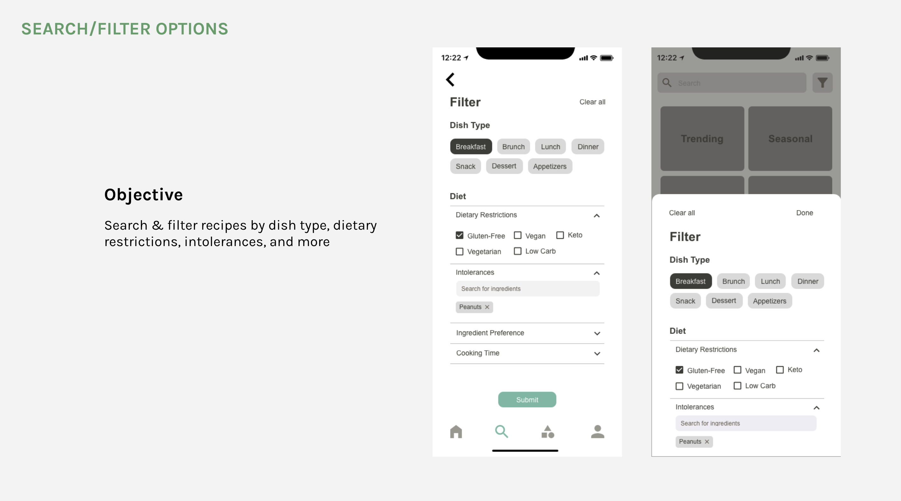
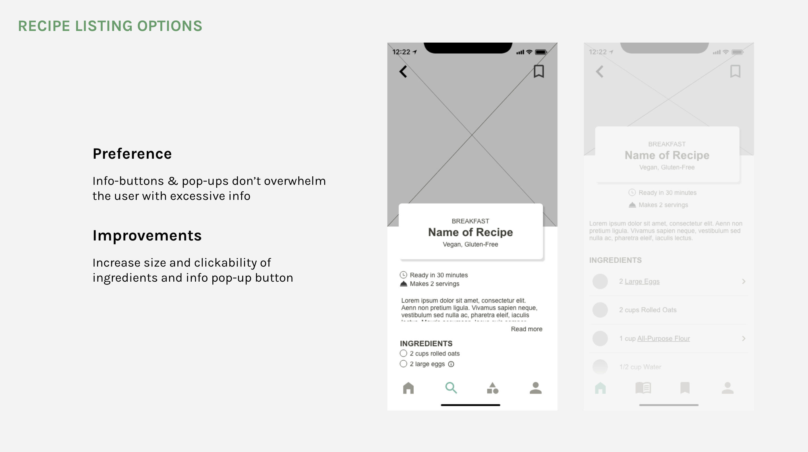
features
Ingredient Substitutions: Allows the user to substitute
ingredients directly on the recipe or in the search feature. The pop-up feature allows the user to
selective view additional information without being overwhelmed. They can further view the subsitute
ingredient by viewing it on the full ingredients page if needed.
Search Recipe Catalog: The recipe filtering system enables
the possibility of sorting searches by preparation time, cuisine, and avoided ingredients. The flexible
of this feature allows the user the option of more refined searches or the ability to search freely if
desired.
Personalized Preferences: The creation of an account allows
the user to define their deitary preferences, intolerances, and allergies to find recipe suggestions
that cater to their dietary restrictions and nutritional needs. Preferences can be modiled and adjusted
when needed under the profile tab.
I was responsible for designing the home page, full recipe page, ingredient
page, and filtered search results.
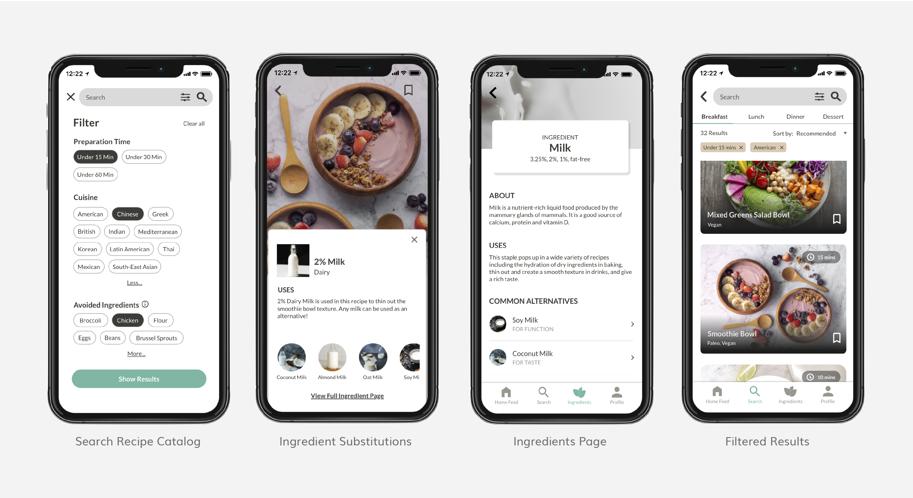
usability testing
For our user interviews, we searched for participants in our targeted
demographic, young adults with dietary restrictions with a desire to cook. These were the steps we
guided our user in:
Create an account
Search for a recipe
Use the filter search catalog
Find alternative ingredients
Bookmark a recipe
View profile and edit dietary choices
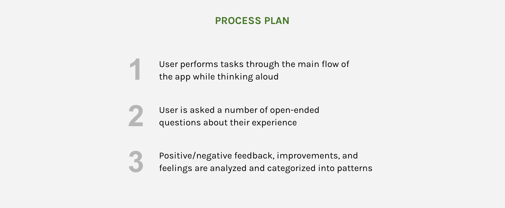
We were all tasked in performing a user interview for each participant we
recruited. I was able to successfully interview Kenny through the testing process over a zoom call.
Conducting a user interview online is definitely more challenging than an
in-person call, as there were gaps in communication where I needed to provide more guidance to explain
certain features. It was difficult to assess and troubleshoot the prototype error as it was difficult to
see the user's perspective.
We collectively began analysing our findings from our particpants and
discovered a few common usability issues and minor styling concerns. As a team, we identified solutions
that would consider the goals of our end user.
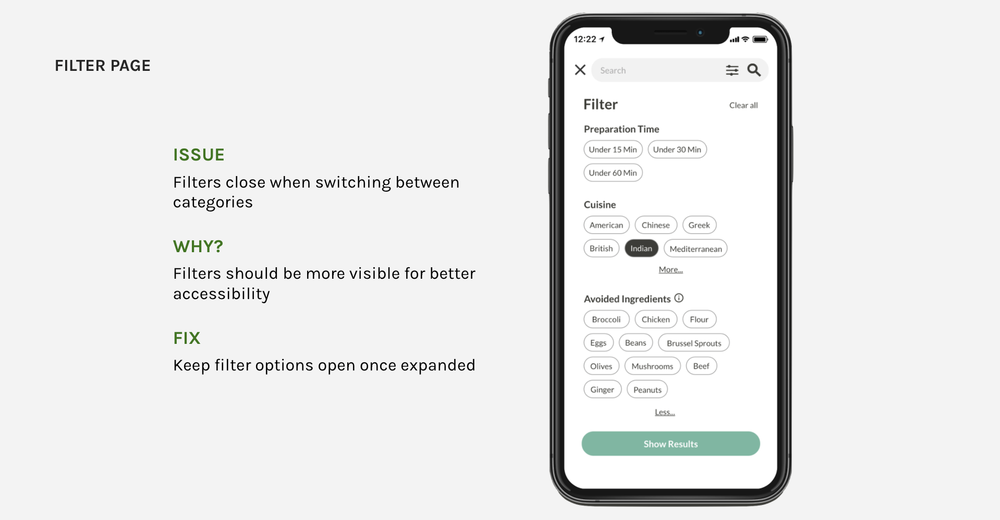
filter feature would close unexpectedly when opening new tab option
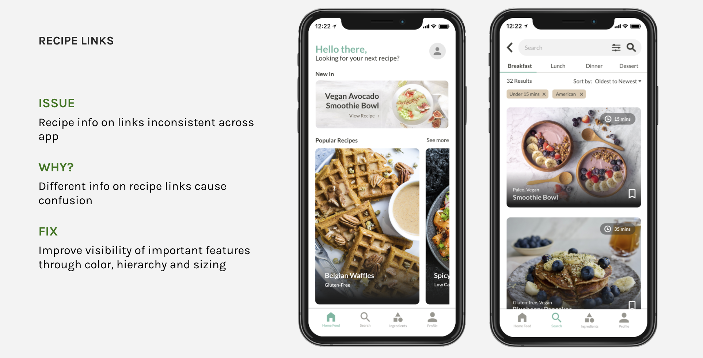
design inconsistency throughout the pages
reflection
Throughout the duration of the project, our team was able to develop a functional recipe searching mobile application. This created a strong foundation of skills, where it can be applied to future projects.
This experience has given me many opportunity in growth, including using prototyping tools like UXPin, to explore how interaction works in the experience of a mobile design application. This project centred heavily on user-experience, where the heavy significance of prioritizing user needs and goals ultimately allows for the design of an optimal interface. Considering the user needs and goals, as well as maintaining the design principles allowed us to successfully complete this project.
references
Shirai Sola S., Seneviratne Oshani, Gordon Minor E., Chen Ching-Hua, McGuinness Deborah L.. (2021). Identifying Ingredient Substitutions using A Knowledge Graph of Food. Frontiers in Artificial Intelligence, 3, 111. DOI: 10.3389/frai.2020.621766
Henderson, R. by E. (2021, October 8). Study sheds light on the consequences of picky eating in college students. News. https://www.news-medical.net/news/20211007/Study-sheds-light-on-the-consequences-of-picky-eating-in-college-students.aspx.